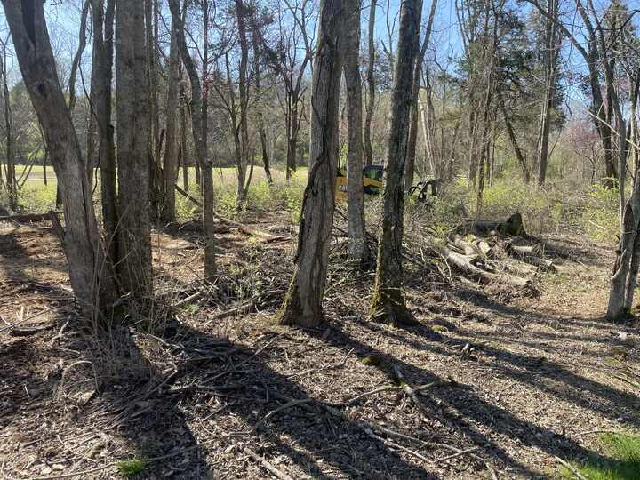
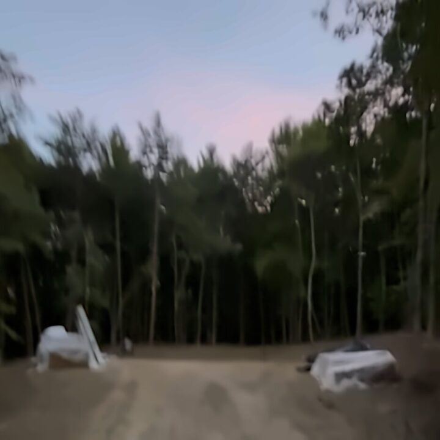
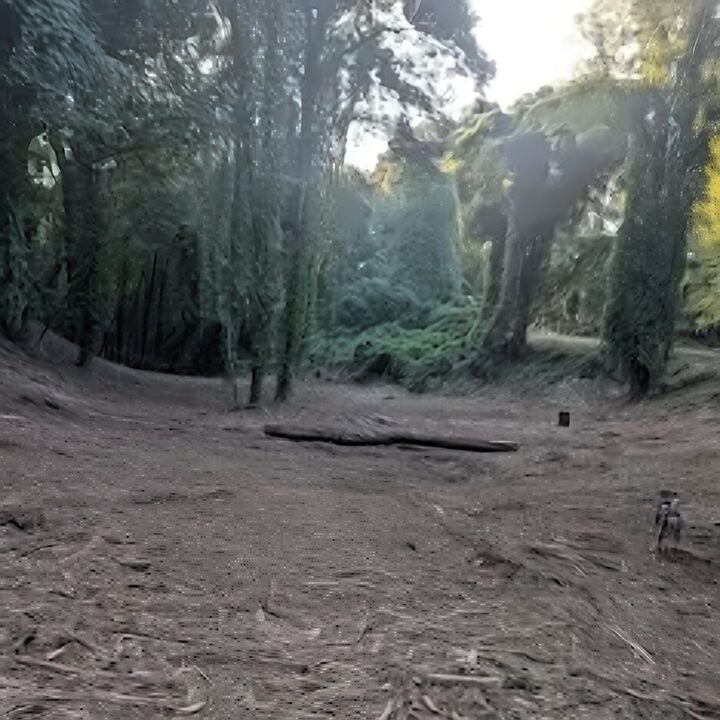

LAND CLEARING & FORESTRY MULCHING PROS IN KNOXVILLE, TN
What sets us apart from other companies is the large equipment that we own, not rent, and operate on a daily basis.
We can handle multiple large scale projects at once, while also having the ability to complete smaller and more delicate ones in an efficient and affordable manner.
We’re able to focus more on getting the land clearing, brush removal and tree removal projects done by owning our large pieces of equipment and having multiples of all.
Along with our professional, experienced crews that can operate and complete projects with excellence.
Call/Message Us For an Estimate Today!
Clearing Where Skid Steers Can't Go
Steep hillsides, creek banks and tight wooded lots used to mean hand crews or no clearing at all. Our FAE RCU, a remote-controlled tracked forestry mulcher, reaches the places a traditional skid steer can't, safely and with the same clean, mulched finish.
Clears grades that are too steep or unstable to safely drive a skid steer on, including banks, ravines and lakefront hillsides.
A compact track carriage fits between trees, along fence lines and behind homes, sheds and pools where a full-size machine can't get in.
The operator runs the machine by remote from a safe distance, out of the way of flying debris and off unstable ground.
Close, careful control lets us take out the brush and small trees and leave the trees and plantings you want to keep.
A lighter, tracked machine leaves less rutting and soil damage on wet or sensitive ground, with no burning and no hauling.
Overgrown slopes, creek banks, ditches and wooded backyards that a traditional skid steer can't reach are now jobs we can take on.
Land Clearing Projects

 BeforeAfter
BeforeAfterBenefits OF FORESTRY MULCHING
Enhanced Land Management and Restoration
Erosion Control and Soil Health Improvement
Fire Hazard Reduction
Work With Us
Our process is simple. Just contact us to get started.
From there we will provide you with a free consultation and quote. Before long the job is done!
Tell Us About Your Project
Get a Custom Tailored Execution Plan and Estimate
Sit Back and Relax While We Transform Your Land
Land Clearing in knoxville, tennessee
Land clearing in Knoxville, Tennessee, offers significant benefits, particularly in a region characterized by its varied landscapes and the need for responsible land development and management.
Land clearing in Knoxville, Tennessee, when conducted responsibly and with consideration for environmental impacts, can support development, enhance ecological balance, and contribute to the health of the local environment. It’s a vital activity that supports the region’s growth, agricultural productivity, and natural beauty.
Here are three key advantages:
Preparation for Development and Agriculture
Habitat Management and Biodiversity
Disease and Pest Control
What Our Land Clearing Clients Say
A Lakefront Lot, Cleared
“If anybody wants to skip all that headache, I would just call these guys.”
Josh · Loudon, TN ★★★★★
★★★★★Quick, Professional and Reasonably Priced
“If you're looking for land clearing The Yard Force has got you covered. Adam and his brother are the two I worked with to get my project down. They were extremely professional and accommodating. They got the job done quick and it was reasonably priced. Would highly recommend to anyone looking to Clear/mulch land.”
matt gutierrez ★★★★★
★★★★★Land We Thought Was Lost Forever
“Before, During, and After!! Omg! The hubby and I cannot believe the difference! We own a home on a 2 acre lot in the city limits of Knoxville. 1.45 is a detention pond meant to hold up to 10 days of storm water due to the water shed/storm water act. We are so thankful and grateful to The Yard Force for everything! First person (Clay) for helping us get quoted, scheduled, and staying within our budget and answering all of our questions. Second person (Kevin) for helping me understand the job, being patient with me, and literally doing an amazing job! We are so excited to be able to use portions of our land that we thought would be lost forever!”
Ashley Merie · June 2024 ★★★★★
★★★★★A Couple of Acres, Cleared Three Days Later
“Adam and crew did an amazing job. They came out to look at the job on a Sunday and were there working 3 days later. Cleared a couple of acres for me with great communication and better finished product than we envisioned. Very prompt and professional crew. Would not hesitate to hire them again.”
Rick Jordan II
★★★★★Land Cleared and a Barn Pad Built
“Couldn’t be happier. Adam was great. His communication was spot on. Price was great considering the work and travel. I’m a far distance away and he sent me videos and pics daily. He kept me in the loop on his timing and weather. They did an excellent job clearing land with some rather large trees. I asked to have stumps placed in one area and trunks in another and they did just that and very neatly too. They also built a pad for a barn to be built. They also widened the access road nicely. They tackled bad weather and still got it done and flat! Even the delivery driver commented on how solid the pad was. It was nothing short of a great experience. I would recommend them to anyone. Thank you very much.”
Joseph Carbray
★★★★★Above and Beyond
“I was very impressed with the job they did... They went above and beyond the call of duty.. they addressed all my needs and did it in a timely manner for the price they quoted.. they were friendly, hard-working and thorough with the job they did.. if anybody needs clearing their property.. well these folks do a great job and I recommend them highly..”
Kelly Brown
Land Clearing FAQ
How much does land clearing cost?
Forestry mulching typically runs $1,000–$4,000 for up to 1 acre: underbrush and small trees are mulched in place and the mulch stays on the ground. Full land clearing, which removes trees, stumps and roots for a bare, buildable site, runs roughly $9,000–$15,000 per acre. Price depends on the type of work requested, the machines needed, the grade of the land and location. Not sure which you need? Call (865) 290-8815 for a free on-site estimate.
These are wide, ballpark ranges, not a quote. Multiple factors affect the final price, including density, terrain and grade, access points to the site, the scope of work, materials and location. For an in-depth quote, it’s best for us to come out and see the property in person, so we can make sure you’re not being overcharged.
Can you clear steep or hard-to-reach areas?
Yes. Along with our skid steer mulchers we run an FAE RCU remote-controlled forestry mulcher. It climbs slopes too steep to safely drive a skid steer on and fits between trees, along creek banks and behind homes where larger machines can't go, while the operator controls it from a safe distance.
Do you provide free estimates?
Yes
Do you do Land Clearing in the Greater Knoxville, Tennessee area?
We sure do! We provide Land Clearing, Forestry Mulching and many more services in the Knoxville, Tennessee Area.
I need help just deciding where to begin. Do you do free quotes?
That’s right! A big part of helping our prospective customers (even if we never work together) is just getting you educated and informed! That’s part of our free quote and consultation process.
Do you do any other services?
Yes! We offer lawn care, maintenance, landscape, hardscape and irrigation services.
What is the difference between land clearing and Forestry Mulching?
What are the benefits of Forestry Mulching?
1. Improved Soil Quality: Forestry mulching breaks down woody debris and other organic matter, contributing to the nutrient-rich soil that is beneficial for plant growth.
2. Weed Control: Mulch acts as a natural weed barrier, preventing weed seeds from receiving sunlight and germinating.
3. Erosion Prevention: The layer of mulch helps to hold moisture in the soil, reducing erosion caused by wind or rain.
4. Cost-Effective: Forestry mulching eliminates the need for costly equipment and labor-intensive processes like traditional land clearing methods.
5. Environmentally Friendly: Unlike burning or chemical treatments, forestry mulching is a sustainable and environmentally friendly way to clear land.
6. Wildlife Habitat Preservation: Forestry mulching leaves behind smaller branches and logs, creating a habitat for small animals such as insects, birds, and reptiles.
7. Faster Land Clearing Process: With forestry mulching equipment, large areas can be cleared quickly and efficiently compared to other methods.
8. Reduced Fire Risk: By removing dead vegetation that can act as fuel for wildfires, forestry mulching can help reduce the risk of fire on your property.
9. Versatile Application: Forestry mulching can be used for various purposes such as land development, trail creation, right-of-way clearing, storm damage restoration, and more.
10. Aesthetically Appealing: The natural look of forestry mulch adds visual appeal to any property while still maintaining its functionality.
Request a Land Clearing Quote
Tell us about your property and project. This request goes straight to our land clearing team, and we'll follow up to schedule a free on-site visit.
Land Clearing Quote Request
Thank you!
We received your request and will be in touch shortly with your free quote. Need us sooner? Call (865) 290-8815.